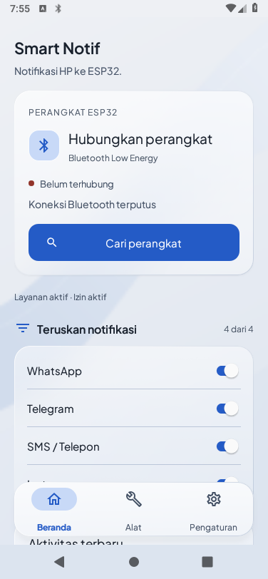
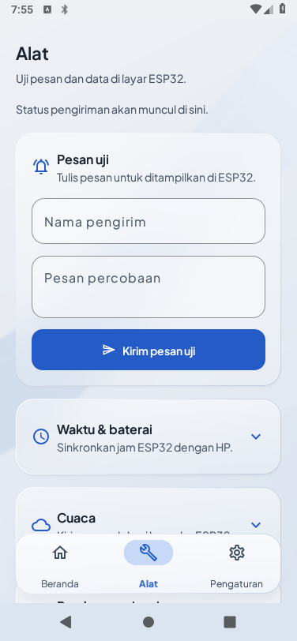
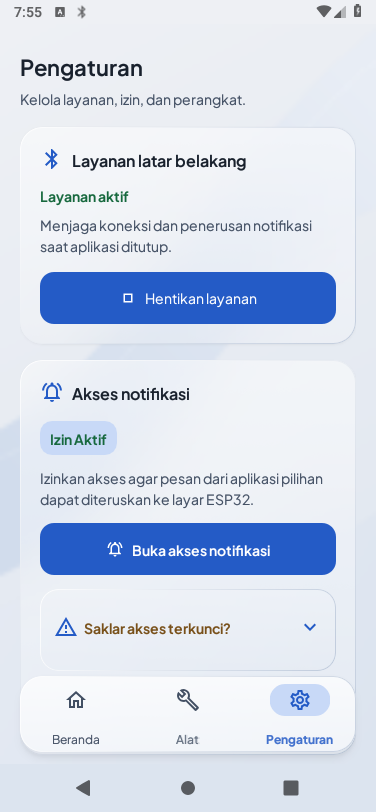
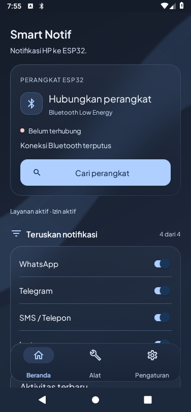
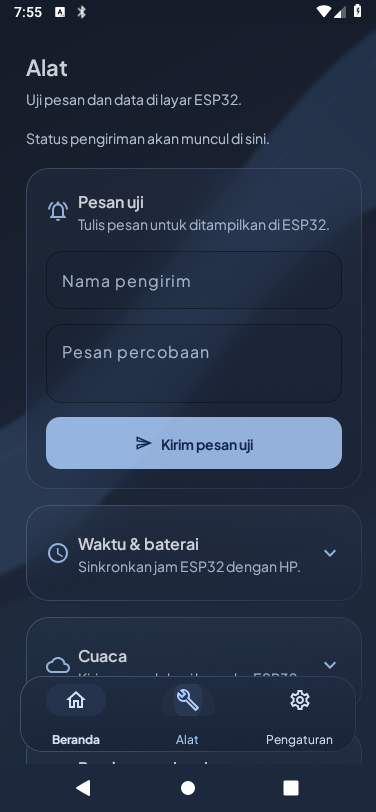
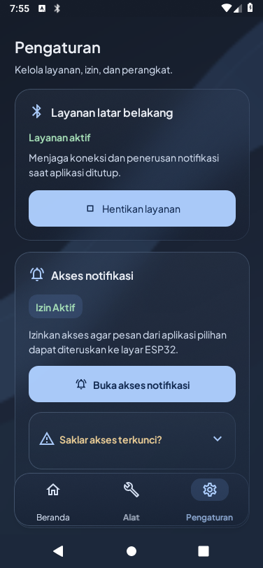
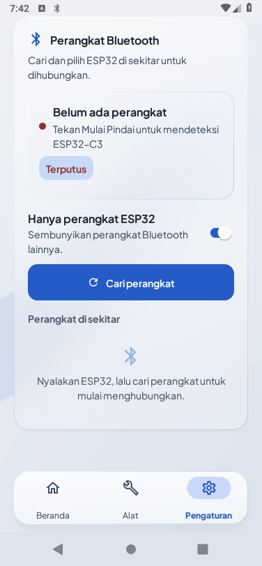
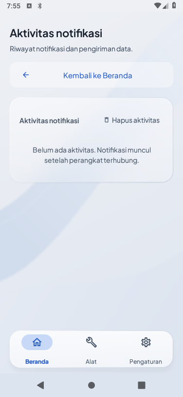
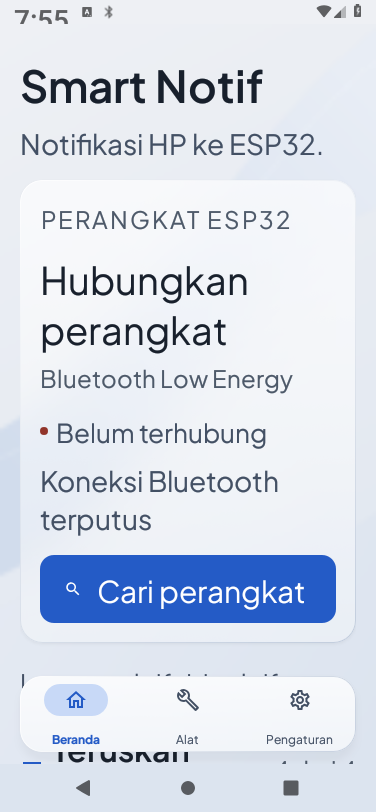

Pearl + Cobalt
Screenshot aplikasi Android yang berjalan di emulator Orca. Palet pearl, aksi cobalt, font Plus Jakarta Sans, dan tiga tab: Beranda, Alat, Pengaturan.
Layanan latar belakang serta akses notifikasi aktif pada emulator. Bluetooth belum terhubung; emulator ini tidak memiliki adapter BLE untuk menguji ESP32 fisik.

Koneksi langsung, kesiapan layanan, dan filter.

Form pesan uji dan modul data yang dapat dibuka.

Kontrol layanan dan izin.

Pasangan graphite biru untuk arah B.

Hierarki dan kontrol konsisten dengan tema terang.

Status memakai peran warna terpisah dari tombol.

Akses langsung dari Beranda ke pencarian perangkat.

Riwayat penuh dipisahkan dari pratinjau Beranda.

Ikon dekoratif disembunyikan agar judul membungkus dengan rapi.